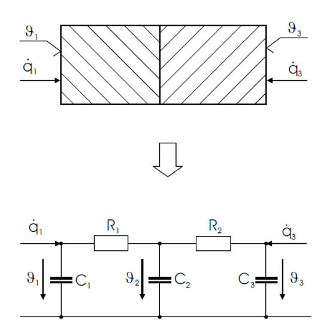
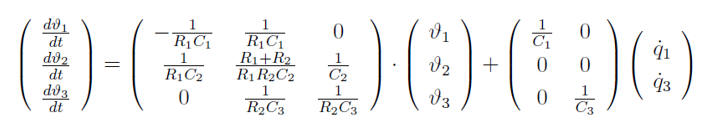

Wall_basic
Wall_basic Path: CARNOT/Basic/Thermal_Models
Wall_basic
Path: CARNOT/Basic/Thermal_Models
Purpose
Basic
model
of a wall, floor or ceiling of a house.
Description
Conduction
of heat
The heat conduction of a wall can be assessed with the Beuken-model as shown in Figure.

The underlying assumption is a one-dimensional heat flow. Each wall-layer is separated into two equal partial capacities, to be seen as on both surfaces of the wall-layer. Should the wall consist of multiple partial layers, their partial capacities of adjoining layers are combined in a single capacity ci . Thermal conductivity through a wall layer is modelled with resistance ki which combines both partial capacities. The transition from one layer to the next is described with node i to which capacity ci and resistances ki-1 and ki are attached.
Transformig the figure of the Beuken model to a matrix equation given when keeping the resistance values:

with
Ti: temperature of node i [°C]
ci: specific heat capacity of node i [J/(kg*K)]
ki: specific heat resistance between node i and node i+1 [W/(m2*K)]
Ri: specific heat resistance between node i and node i+1 [(m2*K)/W]
(dq/dt)i: optional power flow into node i (i.e. floor heating)
The composition of a wall in j layers is thus described in Beuken with j+1 nodes via j+1 differential equations. The equation system for a two-layered wall as in Figure goes as follows on matrix convention:

with

Attached to the first and last node (wall-surfaces) are thermal transfer resistances ar und ac.
The number of nodes depends on the time-constant given in the dialog box. A minimum of two nodes per layer is taken. The condition for the number of sublayers in one layer is (adapted from [Feist 1994]):
N_Sublayers = ceil(sqrt(rho*c / (2.0*cond*TAU)) * dnode[j]) + 0.1)
with
Validation
The model has not yet been tested under all conditions. It has been compared to
the results given by Feist (Feist 1994) and to the measured and calculated data
of the SOPASIM-project (Balters 1995). Comparison to measurements has also been
done with data from a project in Argentina (Mueller 1999).
Example the block is used in example_room_radiator.slx and example_room_floor_heating.slx
Balters, E., Lehmann, H., Schaub, A.: SOPASIM - Test weit verbreiteter
Solar-Passiv- Simulationssysteme für Architekten,
Abschlussbericht, UHL Data,
Herzogstr. 27, Aachen, Arbeitsgemeinschaft Solar Nordrhein-Westfalen, 1995
Feist, W.: Thermische Gebäudesimulation - Kritische Prüfung unterschiedlicher Modellansätze, Verlag C.F.Müller, Heidelberg, 1994
Kasten, F. Strahlungsaustausch zwischen Oberflächen und Atmosphäre, VDI-Bericht, Nr. 721, 131-158, Düsseldorf, 1989
Mueller, C.: Diplomarbeit University of Karlsruhe, 1999
Recknagel-Sprenger-Schramek: Taschenbuch für Heizung + Klimatechnik, R. Oldenbourg Verlag München Wien, 1995
VDI-Wärmeatlas, Berechnungsblätter für den Wärmeübergang, 7. Auflage, VDI Verlag GmbH, Düsseldorf, 1994
Wimmer: Thermisch-Energetische Gebäudesimulation, Dissertation Universität Kassel, 2004
Parameters and Dialog Box

Characteristics
Direct Feedthrough Yes
Sample
time
Inherited
from driving block
States
corresponding
to the number of nodes
Vectorized
No